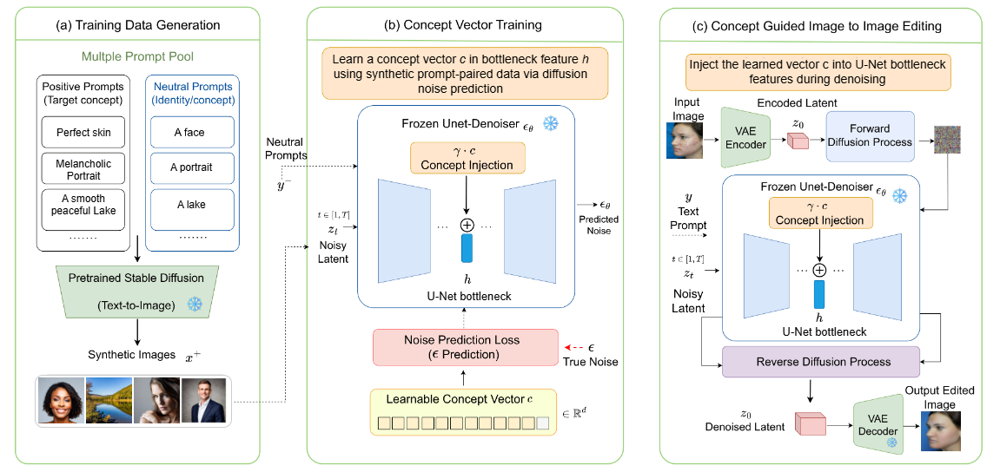
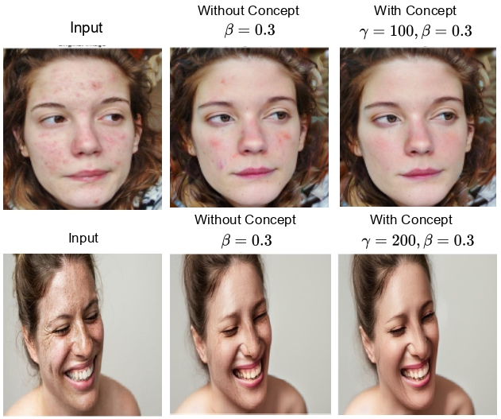
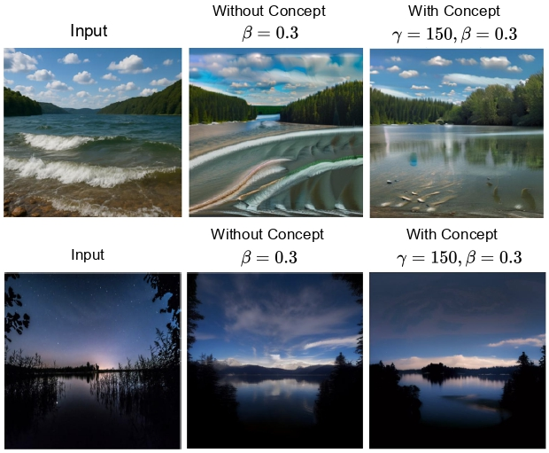

Abstract
Diffusion-based generative models achieve high-fidelity image synthesis; however, controlling internal representations for abstract visual concepts remains challenging due to the ambiguity of textual descriptions. We propose a prompt-guided concept-vector learning framework for controllable manipulation of such concepts without requiring external human-annotated image pairs, segmentation masks, identity labels, or manually annotated editing targets. The method learns a compact concept vector in the bottleneck feature space of a pretrained Stable Diffusion U-Net while keeping the pretrained model frozen. Positive and neutral prompt pairs provide weak semantic guidance, and the learned vector is applied in an image-to-image setting through controlled noise injection and concept-guided denoising. Experiments on perfect skin and peaceful lake show improved semantic alignment and structural preservation compared with Stable Diffusion image-to-image baselines, with human preference rates of 76.0% and 85.7%, respectively.
Method Overview
The framework learns one lightweight concept vector per target concept using paired positive and neutral prompts. The vector is injected into the U-Net mid-block, a semantic bottleneck where high-level visual information is aggregated, while the VAE, text encoder, and U-Net weights remain frozen. During editing, the concept strength is controlled by gamma and the image-to-image noise strength is controlled by beta, giving a practical trade-off between semantic modification and input-image fidelity.
This design is parameter efficient: each concept vector has 1280 trainable parameters, about 0.0049 MB of fp32 storage, and adds only a small inference overhead compared with the Stable Diffusion image-to-image baseline.

Results


BibTeX
@Article{jimaging12070279,
AUTHOR = {Khalid, Mahzaib and Ying, Fangli and Atef, Al-Garadi Ahmed Mohammed and Phaphuangwittayakul, Aniwat and Dhuny, Riyad},
TITLE = {Prompt-Guided Semantic Latent Direction Learning in Diffusion Models for Abstract Visual Concept Manipulation},
JOURNAL = {Journal of Imaging},
VOLUME = {12},
YEAR = {2026},
NUMBER = {7},
ARTICLE-NUMBER = {279},
URL = {https://www.mdpi.com/2313-433X/12/7/279},
ISSN = {2313-433X},
DOI = {10.3390/jimaging12070279}
}